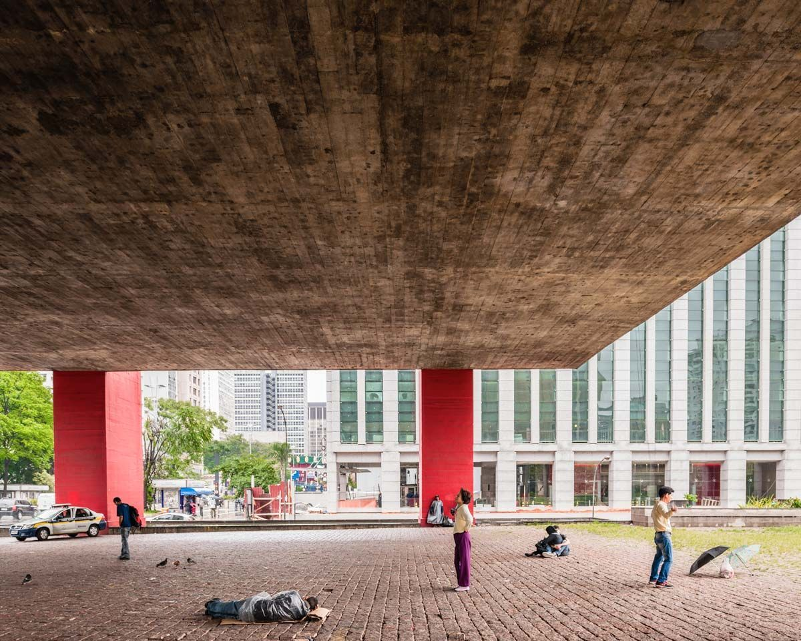
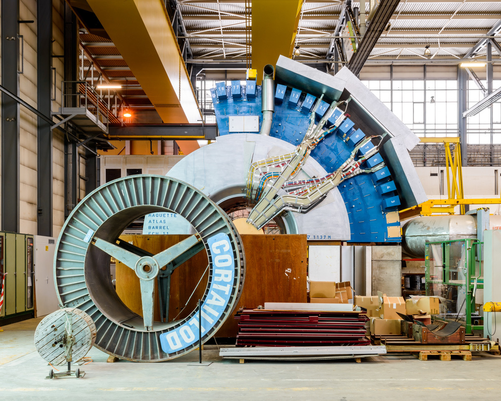

El nuevo festival de fotografía y arquitectura virtual Zoomed In se lanzó esta semana. Del 21 al 24 de abril, el festival reunirá a una selección internacional diversa de fotógrafos de arquitectura y creativos interdisciplinarios en una serie de charlas y debates en línea, proyecciones de cortometrajes, galerías de imágenes y una venta de obras de caridad para recaudar fondos para los más necesitados durante la actual crisis pandémica.
Como afirman los organizadores, el festival virtual presenta una oportunidad para que las comunidades de arquitectura y fotografía se involucren mejor con el público a través de un programa informativo e inspirador de eventos virtuales curados por expertos de la industria. Luke O'Donovan, fundador de Zoomed In, mencionó que "por la naturaleza de nuestro trabajo, como fotógrafos de arquitectura, tendemos a ser bastante solitarios, por lo que ha sido fantástico ver cómo estamos frente a la crisis global, Zoomed In realmente ha reunido a las comunidades de arquitectura y fotografía de todo el mundo. Trabajando colaborativamente con los curadores invitados en el espacio de poco más de una semana, hemos creado un programa con una gama ecléctica de participantes, protagonizada por algunos de los destacados fotógrafos, arquitectos, críticos y muchos más. Estoy más que emocionado de ver que todo esto cobre vida muy pronto."
Los colaboradores incluyen: Alastair Philip Wiper, Alex de Rijke (dRMM), Emile Rafael, Forbes Massie, Hélène Binet, Jim Stephenson, Lara Lesmes y Fredrik Hellberg (Space Popular), Laurian Ghinițoiu, NAARO, Sue Barr. Programa de curadores invitados: VIEW Pictures, Mass. Collective, Laura Mark, Power Structures (Francisco Ibáñez & Luke O’Donovan).